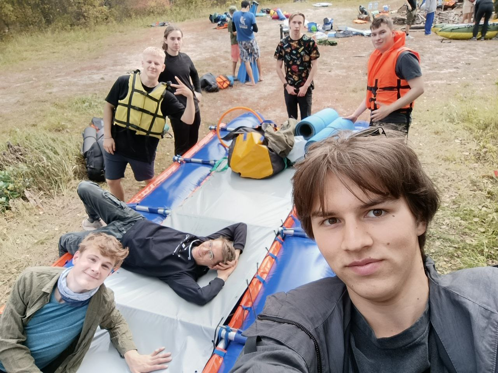
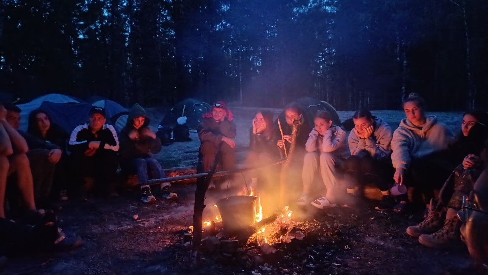

Всем привет! Это моя страничка и десь я расскажу о себе и своих увлечениях, а так же поделюсь моими соц. сетями и некотрыми проетами и интересными мыслями
Мы с одногруппниками очень любим ходить в походы, сплавы и другие туристические мерояприятия. Мы за активный отдых и здоровый образ жизни. Физические нагрузки помогают нам держаться в тонусе.


Наверное самый запомянающийся для меня был поход "три корочки". Мы не брали с собой кучу еды, как это делают обычно. Вместо этого мы взяли всего три корочки хлеба и сделали из них сухари. Настоящее испытание воли.